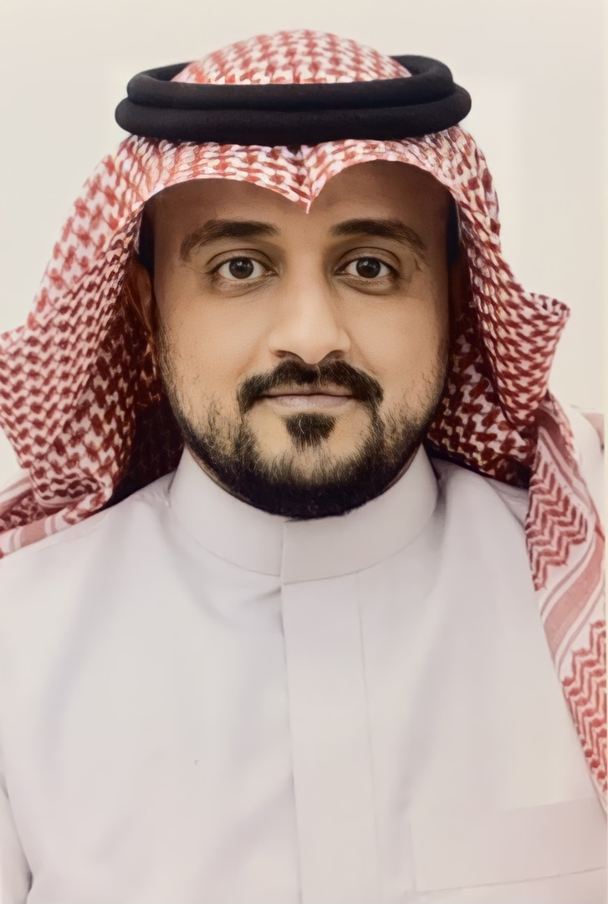

Ibrahim Alghamdi, PhD

I'm an Assistant Professor in the computer science department, Faculty of Science and Arts in Baljurashi at Al-Baha University.
I'm also a member of the Essence Research Lab in
School of Computing Science at the University of Glasgow.
I was a member of the Networked Systems Research Laboratory (netlab) at the University of Glasgow.
I received my Bachelor's Degree in Computer from Al-Baha University in 2010, my M.S. degree in Computer Science from Monmouth University in 2014
and my Ph.D. degree in Computing Science from
the University of Glasgow in Oct 2021.
Contact Information
Al-Baha University.
Faculty of Science and Arts in Baljurashi.
Baljurashi, Baha, Saudi Arabia.
Email: ia.alghamdi@bu.edu.sa
Research
My research interests are in the broad areas of: Decision-making and Resource management in Cloud Computing and Mobile Edge Computing.
Teaching
In this semester, I am teaching the following courses:
Cloud Computing
Artificial Intelligence
I have taught the following courses:
Senior Project for Computer Science Students
Object-Oriented Programming
Introduction to Algorithmic Problem Solving
Data Structures and Algorithms
Mobile Computing and its Applications
Publications
- Aladwani, T., Anagnostopoulos, C. , Kolomvatsos, K., Alghamdi, I. and Deligianni, F. (2023) Query-driven Edge Node Selection in Distributed Learning Environments.
In: Data-driven Smart Cities (DASC 2023)/ 39th IEEE International Conference on Data Engineering (ICDE 2023), Anaheim, CA, United States, 3-7 April 2023, (Accepted for Publication).
- Christos Anagnostopoulos, Tahani Aladwani, Ibrahim Alghamdi, and Kostas Kolomvatsos. ”Data-Driven Analytics Task Management Reasoning Mechanism in Edge Computing.”
Smart Cities. 2022, The paper.
- Tahani Aladwani, Christos Anagnostopoulos, Ibrahim Alghamdi, and Kostas Kolomvatsos.
”Data-Driven Analytics Task Management at the Edge: A Fuzzy Reasoning Approach”. In:
The 9th International Conference on Future Internet of Things and Cloud (FiCloud 2022), 22-24
Aug 2022, accepted for publication The conference website.
- Ibrahim Alghamdi, Christos Anagnostopoulos, and Dimitrios P Pezaros. ”Optimized
Contextual Data Offloading in Mobile Edge Computing”. In: IFIP/IEEE International
Symposium on Integrated Network Management (IM 2021), Bordeaux, France, 17-21
May 2021, The paper.
- Ibrahim Alghamdi, Christos Anagnostopoulos, and Dimitrios P Pezaros. ”Data quality-aware task offloading in Mobile Edge Computing: An Optimal Stopping Theory approach.”
Future Generation Computer Systems (2020), The paper.
- Ibrahim Alghamdi, Christos Anagnostopoulos, and Dimitrios P Pezaros. ”On the Optimality of Task Offloading in Mobile Edge Computing Environments,” 2019 IEEE
Global Communications Conference (GLOBECOM), Waikoloa, HI, USA, 2019, pp.
1-6, The paper.
- Ibrahim Alghamdi, Christos Anagnostopoulos, and Dimitrios P Pezaros. Delay-Tolerant
Sequential Decision Making for Task Offloading in Mobile Edge Computing Environments.
MDPI Information 2019, 10, 312, The paper.
- Ibrahim Alghamdi, Christos Anagnostopoulos, and Dimitrios P Pezaros. ”Time-Optimized
Task Offloading Decision Making in Mobile Edge Computing,” 2019 Wireless Days, Manchester, United Kingdom, 2019, pp. 1-8 - Recipient of the Best Paper Runner Up Paper,
The paper.
Presentations and Posters
- Presentation: Edge Computing: Evolution, Applications, and Research Directions, Faculty of Computing and Information, Al-Baha University, December, 2023.
- Presentation: Task Offloading Decision Making in Mobile Edge Computing, MobiUK, The Department of Computer Science, University of Oxford, July 2019, Program link.
- Poster: Time-Optimized Task Offloading Decision Making in Mobile Edge Computing, Scottish Informatics & Computer Science Alliance (SICSA) PhD Conference, the University of Stirling, Stirling, UK, , June 2019.
- Poster: Time-Optimized Task Offloading Decision Making in Mobile Edge Computing, DemoFest, Networking & The Cloud section, Edinburgh, UK, November 2018.
- Poster: Data Placement and Migrations in Mobile Edge Computing, DemoFest, Networking & The Cloud Section, Edinburgh, UK, November 2017.
Training and Professional Development
- IBM Artificial Intelligence Practitioner Certificate: Instructor V2
- IBM AI Analyst 2022 - Mastery Award
- How to write a data management plan, University of Glasgow, 2019.
- Presenting with Impact, University of Glasgow, 2019.
- Introduction to Statistical Inference, University of Glasgow, 2017.
- Introduction to Statistical Modelling, University of Glasgow, 2017.
- Introduction to Design and Analysis of Experiments, University of Glasgow, 2017.
Service
I am a member of the Scholarship Committee at the College of Sciences and Arts in Baljurashi, Al-Baha Univeristy.
Instructor for the IBM AI Analyst course , Faculty of Computing and Information, Oct 2023.
Reviewer for the Following Journals:
IEEE Access
Software: Practice and Experience
International Journal of Distributed Sensor Networks
Cybernetics and Systems
I am a Review Editor in
Frontiers in the Internet of Things within the Journal Frontiers - The Artificial Intelligence of Things section.
I served as a reviewer for the IT Diploma Program, the Applied College, Northern Border University, Oct 2022.
I served as a reviewer for, for the 9th IEEE World Forum on Internet of Things (IEEE WFIoT2023) , 12–27 October 2023 // Aveiro, Portugal.
I served as Head of the Computer Science Department - College of Sciences and Arts, Al-Baha Univeristy, 2011